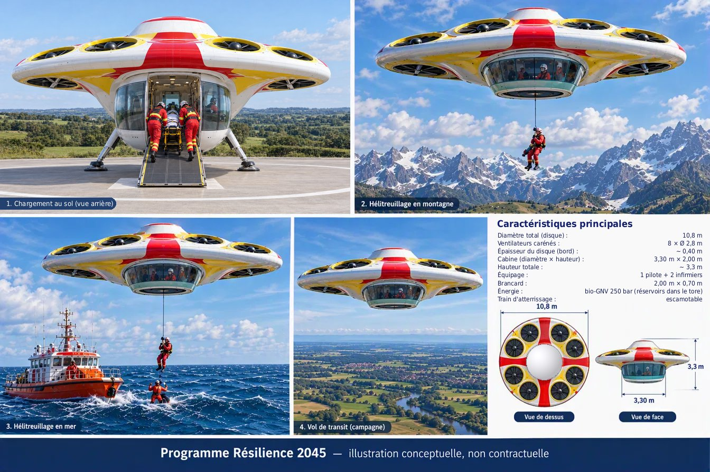

1. Pourquoi le Gyro-Torique ?
Les missions assurées aujourd'hui par hélicoptère (secours médical, hélitreuillage, liaisons rapides) n'ont pas de solution de décarbonation à la fois réelle et économiquement supportable. Les pistes habituelles ont chacune une limite forte :
Kérosène de synthèse (SAF)
Il garde la turbine et son rendement modeste (~25 % pour une turbine légère). Il coûte 2,5 à 4 fois le kérosène fossile.
Tout-batterie
La densité énergétique des batteries ne permet pas aujourd'hui une mission de 250 km de rayon avec un long stationnaire sur zone.
Hydrogène
Le stockage liquide à −253 °C impose des volumes de réservoirs et une cryogénie bien plus lourds à intégrer. Il faut aussi une infrastructure entièrement nouvelle.
La démarche Résilience : électrique + Bio-GNL
Dans l'esprit du programme Résilience, nous avons cherché une architecture qui combine les moteurs électriques et le bio-méthane liquéfié (Bio-GNL), produit en France à partir de déchets organiques et de résidus agricoles.
- Des groupes électrogènes EREV à haut rendement (objectif ~45 %, contre ~25 % pour une turbine légère). Le passage par l'électricité coûte quelques pour cent de pertes (rendement électrique ~0,93), mais le gain de rendement du moteur le compense largement.
- Une turbine d'appoint légère fournit le complément de puissance nécessaire au stationnaire. Une batterie de 45 kWh absorbe les pointes et sert au posé d'urgence.
- Le Bio-GNL contient 16 % d'énergie de plus par kilo que le kérosène, mais 39 % de moins par litre. Il demande donc des réservoirs plus volumineux, mais sans commune mesure avec les contraintes de l'hydrogène. Ces réservoirs sont intégrés dans la structure même de l'appareil. Une variante au bio-GNV comprimé à 250 bar est également étudiée (section 6) : sans évaporation pendant l'alerte, elle pourrait se ravitailler dans de nombreuses stations aménagées du réseau national, au plus près des interventions.
- Des ventilateurs carénés de type drone remplacent le rotor exposé. La puissance est distribuée à 8 moteurs électriques, ce qui améliore la sécurité autour de l'appareil et supprime la boîte de transmission principale.
Les analyses et le dimensionnement effectués montrent qu'un tel appareil est physiquement envisageable, avec des avantages réels pour les missions SAMU et d'hélitreuillage, sous réserve de lever plusieurs verrous techniques (section 5).
2. Pour quelles missions ?
Le Gyro-Torique vise un créneau précis, où l'accès, la sécurité et la précision comptent plus que la vitesse :
SAMU / secours médical
Transport d'un patient allongé avec 2 soignants debout de part et d'autre de la civière. Poses sur toits d'hôpitaux et hélistations urbaines.
Hélitreuillage
Treuil dans l'axe du centre de gravité, par une trappe de plancher (barquette à plat), avec l'opérateur dans la cabine.
Transport express urbain
Liaisons rapides entre sites proches (hôpitaux, plateaux techniques).
Mission de référence : rayon de 250 km à 180 km/h, 25 min de stationnaire sur zone, 20 min de réserve, 600 kg de charge utile, par temps chaud (ISA+20, ~35 °C).
Le Gyro-Torique n'est ni un appareil cargo, ni un remplaçant universel du H135 : il est optimisé pour ces missions uniquement.
3. Une architecture intégrée
Vue de dessus à l'échelle (cotes V12.4)
- Lentille biconvexe de 10,8 m à jante fixe, hauteur ~3,35 m.
- 8 ventilateurs carénés de 2,8 m (49,3 m², entraxe 2 972 mm), dans des conduits jointifs à parois partagées. 6 sont sustentateurs, avec des volets fermés en croisière. 2 ventilateurs arrière à déflecteurs assurent la sustentation au stationnaire et la propulsion en croisière.
- Tore structural contenant 8 réservoirs cryogéniques indépendants de Bio-GNL, posé sur le plateau au-dessus de la cabine.
- Baie moteurs sous le dôme : 2 groupes EREV, la turbine d'appoint et le treuil. Une cheminée d'échappement verticale centrale évite toute réaspiration.
- Cabine vitrée formant cellule de survie, sous le plateau pare-feu : Ø 3,30 m à la base, évasée jusqu'à ~3,70 m sous le plateau ; 1,80 m sous plafond, 2,00 m au centre sur un îlot nivelant. Le vitrage périphérique donne au pilote une vue directe vers l'avant, les côtés et le bas.
- Batterie de 45 kWh sous le plancher, ce qui abaisse le centre de gravité.
- Porte arrière d'environ 1,20 × 1,80 m dans la paroi de la cabine, avec rampe de chargement : le brancard entre à plat, ventilateurs arrêtés.
- Train d'atterrissage escamotable à 4 jambes.
Comment il vole
Au décollage et en stationnaire, les 8 ventilateurs portent l'appareil. Entre 100 et 160 km/h, les sustentateurs se ferment progressivement et les déflecteurs arrière s'orientent vers l'arrière. Au-delà de 160 km/h, c'est le disque lui-même qui porte 100 % du poids, sustentateurs fermés, tandis que les 2 ventilateurs arrière assurent la propulsion.
4. Avantages par rapport au H135 et aux autres solutions
Sécurité
Pas de pale exposée ni de boîte de transmission principale. La puissance est répartie sur 8 moteurs, avec 3 sources d'énergie et une batterie de secours. Le stationnaire est maintenu même après la perte d'un ventilateur.
Mobilité et précision
Pilotage de type drone : réponse immédiate, maintien de position automatique, rotation sur place et approche par n'importe quel côté (détails ci-dessous).
Compacité
Valeur D de 10,8 m contre 12,16 m pour le H135. Un contact léger de la jante fixe avec un obstacle abîme la coque, alors que le même contact serait catastrophique avec un rotor.
Cabine médicale
1,80 m sous plafond (2,00 m au centre) contre ~1,26 m sur le H135. Deux soignants travaillent debout, avec accès à la tête du patient, sur un îlot nivelant qui filtre les vibrations.
Hélitreuillage
Treuil dans l'axe du centre de gravité, par trappe centrale. La charge monte dans la zone calme, sans couple de roulis.
Intégration
Réservoirs, ventilateurs, batterie et moteurs thermiques sont intégrés dans une structure unique : plateau, tore, baie moteurs et cellule de survie.
Énergie et CO₂
Environ 46 % d'énergie en moins par mission (chaîne mixte, sous condition). CO₂ fossile quasi nul à l'usage, et aucun soufre ni aromatique.
Mauvais temps
Il n'y a pas de longues pales à dégivrer : lèvres, stators et volets peuvent être chauffés électriquement. C'est un objectif à démontrer en soufflerie givrante.
Mobilité, précision de positionnement et stabilité
Le Gyro-Torique est piloté comme un drone professionnel : chacun des 8 ventilateurs est commandé individuellement par un moteur électrique, sans intermédiaire mécanique. Il n'y a ni plateau cyclique, ni boîte de transmission, ni temps de réponse de turbine. Ce principe apporte plusieurs atouts :
Réponse immédiate
La poussée de chaque ventilateur varie directement avec le courant du moteur. Les corrections en tangage, en roulis et en hauteur se font par poussée différentielle sur 8 points répartis à 3,9 m de l'axe, ce qui donne un grand bras de levier et une commande fine.
Positionnement précis
Les commandes de vol électriques maintiennent la position automatiquement en stationnaire (satellite et capteurs de proximité). L'approche et le posé sont assistés. L'appareil corrige lui-même les dérives, et le pilote désigne le point visé.
Mobilité omnidirectionnelle
L'appareil étant symétrique, il pivote sur place et se déplace dans toutes les directions de la même façon. Il peut approcher un obstacle, une paroi ou une falaise par n'importe quel côté. La jante fixe tolère un contact léger, là où un rotor ne le tolère pas.
Pas d'anticouple
Les ventilateurs tournent par paires en sens opposés, et le lacet se commande par différence de couple et par les déflecteurs arrière. Il n'y a pas de rotor de queue, donc pas de perte d'efficacité en lacet par vent de travers.
Stabilité en stationnaire
La charge au disque est élevée (~69 kg/m², contre ~36 pour le H135), avec des jets rapides. L'appareil est donc moins sensible aux turbulences en stationnaire. Le comportement est identique quelle que soit la direction du vent (exigence : 65 km/h toutes directions).
Treuillage et posé
Le treuil est dans l'axe : la charge ne crée aucun couple de roulis et monte dans la zone calme au centre. Au sol, les 4 jambes sont largement écartées et la batterie sous plancher abaisse le centre de gravité, ce qui donne une bonne assiette sur terrain irrégulier.
À démontrer : la tenue en rafales d'un disque de 10,8 m, et la stabilité en transition et en croisière. En croisière, le disque est naturellement instable en tangage : la stabilité est assurée par les commandes de vol, comme sur les avions de combat modernes. C'est le premier verrou du programme (section 5).
Comparaison sur la même mission
| Critère | Gyro-Torique V12.4 | H135 | Avantage |
|---|---|---|---|
| Encombrement (valeur D) | 10,8 m, jante fixe | 12,16 m, rotor tournant | Gyro-Torique |
| Pales | Carénées | Rotor exposé | Gyro-Torique |
| Hauteur de cabine | 1,80 m (2,00 m au centre) | ~1,26 m | Gyro-Torique |
| Soins en vol | Soignants debout de chaque côté de la civière, accès à la tête du patient, plancher stabilisé (îlot nivelant) | Soins assis ou à genoux, accès limité au patient | Gyro-Torique |
| Treuil | Dans l'axe, par trappe | Latéral, 272 kg | Gyro-Torique |
| Commande en stationnaire | Poussée différentielle électrique sur 8 ventilateurs, réponse immédiate | Plateau cyclique, rotor et turbine | Gyro-Torique [à démontrer] |
| Précision de positionnement | Maintien de position automatique, posé assisté | Pilote, aidé par un pilote automatique | Gyro-Torique [à démontrer] |
| Mobilité | Pivot sur place, déplacement omnidirectionnel, approche par tout côté | Orientation imposée par le rotor de queue et le vent | Gyro-Torique |
| Anticouple / vent de travers | Aucun rotor de queue, comportement identique quelle que soit la direction du vent | Fenestron, sensibilité au vent de travers en lacet | Gyro-Torique |
| Tenue en rafales | Charge au disque élevée (moins sensible) mais grande surface de disque exposée | Éprouvée | À démontrer |
| Énergie par mission | ~3 150 kWh (~226 kg de Bio-GNL) | ~5 850 kWh (~490 kg de kérosène) | Gyro-Torique (−46 %, conditionnel) |
| CO₂ fossile à l'usage | Quasi nul (carbone biogénique) | ~1,55 t par mission | Gyro-Torique |
| Coût du carburant par mission | ~340–450 € (Bio-GNL) | ~390–590 € (kérosène) ; ~980–1 720 € (SAF) | Gyro-Torique |
| Rayon (même mission) | 250 km (à valider) | ~210–250 km | Équivalent |
| Souffle au sol | ~84 km/h | ~87 km/h | Équivalent |
| Charge utile avec carburant | 600 kg | ~850–950 kg | H135 |
| Vitesse de croisière | 160–200 km/h | ~250 km/h | H135 |
| MTOW | ~3 400 kg (3 070–3 710 kg selon la structure) ; à vérifier vis-à-vis de la masse admissible des hélistations | 2 980 kg (3 100 en option) | À confirmer par l'étude structure |
| Chargement | Ventilateurs arrêtés, pas de rotor tournant près des équipes ; redémarrage électrique en quelques secondes, groupes électrogènes pouvant rester en marche | Rotor tournant (chargement à chaud), ou arrêt puis redémarrage long de la turbine et du rotor | Gyro-Torique |
| Perte totale de puissance | Pas d'autorotation : la sécurité repose sur la redondance (3 sources d'énergie, 8 ventilateurs, 8 réservoirs isolables), avec ~3,2 min de stationnaire sur batterie pour se poser, indépendamment du carburant et à toute hauteur, y compris en stationnaire bas pendant un treuillage | Bimoteur, avec l'autorotation comme secours ultime, délicate ou impossible en stationnaire à faible hauteur | Approches différentes |
| Maturité | Concept | Certifié, plus de 7 millions d'heures de vol | H135 |
Face aux autres pistes de décarbonation
- H135 au SAF : le SAF coûte 2,5 à 4 fois le kérosène fossile. Sa disponibilité restera limitée et sera disputée par l'aviation commerciale. La turbine garde son rendement : on brûle toujours ~490 kg de carburant par mission. Sur le plan des émissions, un kérosène mélangé à environ un tiers de SAF ne fait pas mieux qu'un GNL d'origine fossile. Même pur, le SAF reste en retrait du Bio-GNL : celui-ci peut devenir carbone-négatif grâce à la pyrogazéification et au biochar stocké, et sa combustion ne produit quasiment pas de particules.
- Gyro-Torique à turbogénérateur seul (solution de repli avec la technologie actuelle) : il consomme environ 12 % d'énergie de moins que le H135. L'essentiel du gain vient donc du groupe EREV à haut rendement.
- eVTOL tout-batterie : ils sont adaptés aux trajets courts, mais pas à une mission de 500 km aller-retour avec 25 min de stationnaire.
- Hydrogène : la cryogénie à −253 °C, le volume des réservoirs et une infrastructure nouvelle le rendent difficile à intégrer. Le Bio-GNL s'appuie au contraire sur le réseau gazier et la filière française de méthanisation et de pyrogazéification.
5. Limites et verrous à lever
Le Gyro-Torique est réalisable : chaque élément sait se fabriquer et rien ne va contre la physique. Sa viabilité est plausible, mais elle n'est pas démontrée. Les points suivants décident :
- Tangage et transition (verrou principal) : le centre de portance d'un disque est très en avant. La stabilité doit venir des commandes de vol et être démontrée de 0 à 160 km/h.
- Portance réelle du disque en croisière : elle doit être validée par CFD puis en soufflerie.
- Groupe EREV aviation à ~45 % et ~0,9 kW/kg : il n'existe pas encore. Avec un rendement de 42 %, la masse maximale passe de ~3 400 à ~3 700 kg.
- Masse de structure d'un disque de 10,8 m sans bras : elle doit être consolidée par un bureau d'études.
- Pas d'autorotation : en cas de perte totale de production, la batterie donne ~3,2 min de stationnaire pour se poser. C'est un danger majeur, à traiter comme tel.
- Visibilité du pilote vers le haut, masquée par le disque, et certification (EASA SC-VTOL, catégorie Enhanced).
Perspectives à l'horizon de mise en service
Les chiffres de cette page reposent sur des hypothèses prudentes et sur les technologies d'aujourd'hui. Or l'appareil, s'il est retenu, ne volera pas avant une dizaine d'années. D'ici là, plusieurs gains sont attendus : une structure optimisée par un bureau d'études (22 à 23,5 % de la masse au lieu de 25 %), des batteries plus légères, notamment à électrolyte solide, et des moteurs électriques plus compacts. Comme chaque kilo gagné sur un équipement réduit la masse maximale d'environ 3 kg, la masse maximale pourrait descendre de ~3 400 kg à ~2 650–2 900 kg, proche de celle du H135, et la puissance installée de ~755 à ~525–590 kWe. La variante au bio-GNV pourrait alors tenir la mission complète de 250 km. Ces gains restent des objectifs à démontrer : les hypothèses prudentes restent la référence du dimensionnement.
Programme de validation proposé
La première étape consiste à figer le cahier des charges avec les utilisateurs (SAMU, SDIS). Vient ensuite une maquette volante au 1/8 (Ø ~1,4 m), à réaliser avec une école d'ingénieurs pour quelques milliers d'euros : elle teste directement le verrou le plus risqué (stationnaire, transition, tangage, panne simulée). Les étapes suivantes sont la revue indépendante des calculs et la CFD, les bancs d'essais (ventilateur caréné, groupe EREV, batterie, réservoir), puis un démonstrateur au 1/2. L'ordre de grandeur d'un développement complet est de plusieurs centaines de millions d'euros sur 10 à 15 ans.
6. Chiffres clés (V12.4, estimations d'avant-projet)
| Paramètre | Valeur |
|---|---|
| Diamètre / hauteur | 10,8 m / ~3,35 m (~3,65 m au sol) |
| Ventilateurs | 8 × Ø 2,8 m (49,3 m²), entraxe 2 972 mm, conduits à parois partagées |
| Masse maximale (MTOW) | ~3 400 kg (3 070–3 710 kg selon la structure) |
| Charge utile SAMU | 600 kg |
| Mission de référence | Rayon 250 km + 25 min de stationnaire + 20 min de réserve |
| Croisière | 160–200 km/h ; ~60 kg/h de Bio-GNL à 180 km/h |
| Stationnaire (ISA+20) | ~663 kWe requis / ~755 kWe installés (marge de 10 % + auxiliaires) |
| Chaîne énergétique | 2 groupes EREV 2 × ~220 kWe + turbine d'appoint ~315 kWe + batterie 45 kWh |
| Cabine | Vitrée, Ø 3,30 m à la base, évasée jusqu'à ~3,70 m sous le plateau ; 1,80 m sous plafond, 2,00 m au centre ; porte arrière ~1,20 × 1,80 m avec rampe |
| Carburant | Bio-GNL : 8 réservoirs cryogéniques dans le tore (~350 kg de capacité, ~260 kg emportés sur la mission de référence) |
| Variante bio-GNV 250 bar | Mêmes missions, avec les atouts du gaz comprimé : pas d'évaporation pendant l'alerte, plein en 10 à 15 min sur le réseau de stations à 250 bar. Dans le cadre d'une politique nationale du GNV à 250 bar (~4 700 stations prévues par la PPE Résilience), de nombreuses stations aménagées d'une aire de poser — zones logistiques, méthaniseurs équipés, bases SAMU, hôpitaux — permettent à l'appareil de refaire le plein près de sa zone d'intervention, sans revenir à sa base. Rayon de 250 km visé à la mise en service grâce à une structure optimisée et à des réservoirs allongés ; avec les hypothèses prudentes actuelles, ~150 à 180 km à masse égale, étendus en pratique par les ravitaillements en route |
| Train | Escamotable, 4 jambes |
| Treuil | 272 kg (objectif 300 kg), câble ≥ 90 m, trappe de 2,20 × 0,75 m |
7. L'étude complète est disponible sur demande
Le dossier de conception V12.4 peut être transmis sur demande, notamment aux services de secours (SAMU, SDIS), aux écoles d'ingénieurs, aux bureaux d'études et aux institutions. Il comprend le cahier des charges fonctionnel chiffré, l'architecture, le bilan de puissance et de masse, les performances, la comparaison avec le H135 et le programme de validation. Le modèle de dimensionnement est également disponible.
Les critiques et relectures techniques sont les bienvenues : elles font partie de la démarche.
Autre messagerie : jacquesdiez100@gmail.com